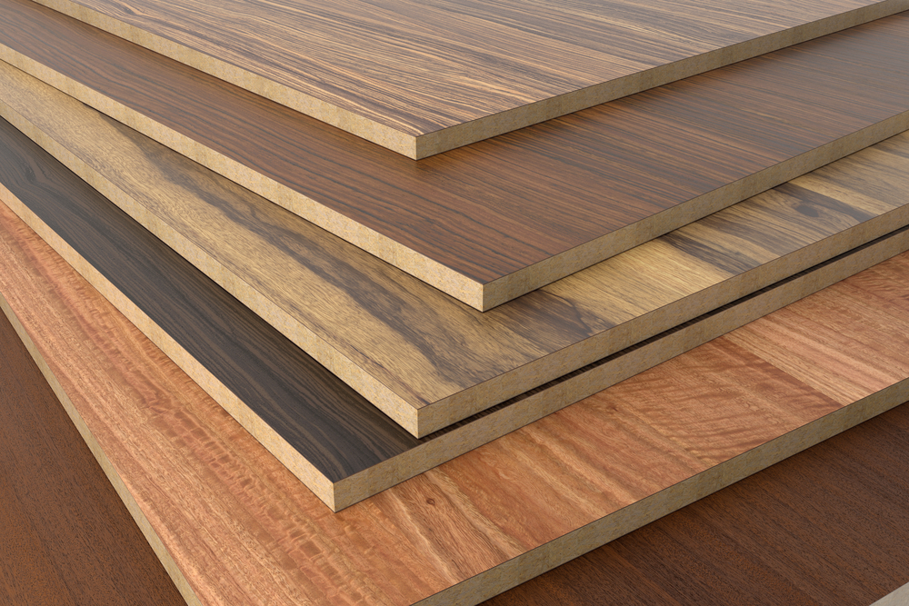
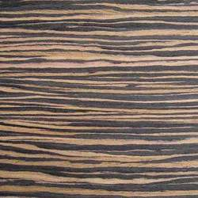
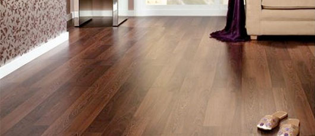
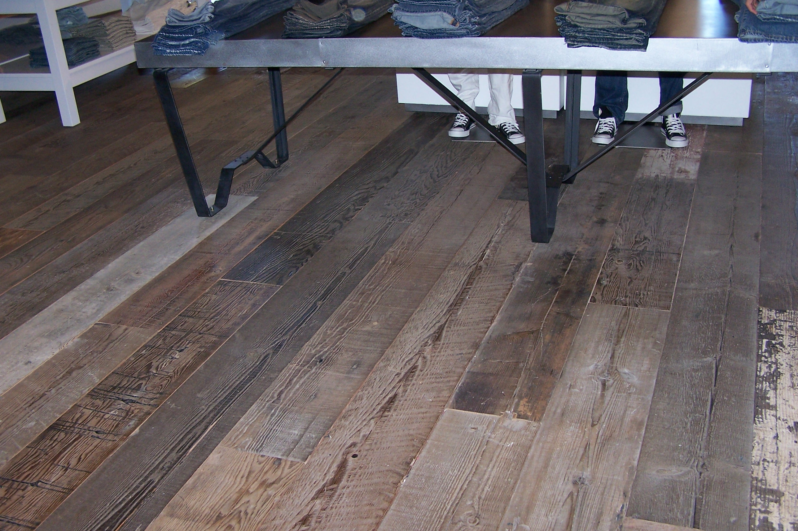
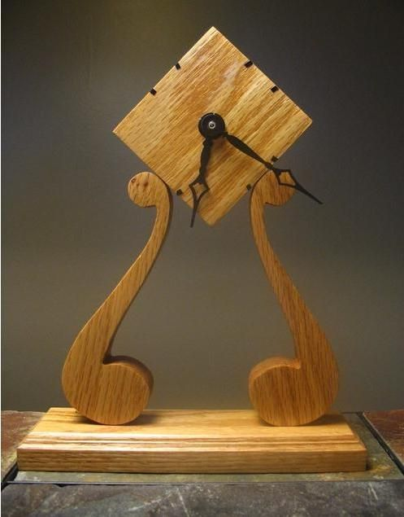
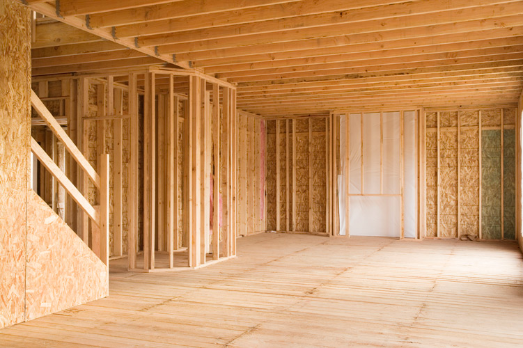
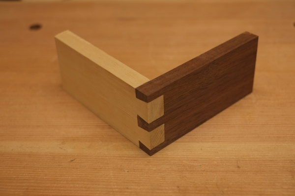
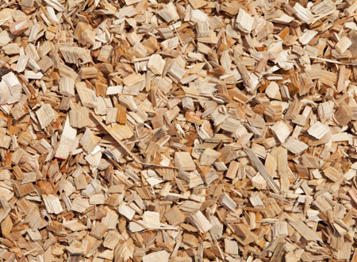

Description
Spruce are trees that have colors ranging from creamy white to light yellow to red-brown. The wood of spruce is straight-grained with thin and regular texture. It is soft in low weight and has medium density and good strength properties.
Light yellow spruce
Red-brown spruce
Creamy white
Uses
The following are some uses of spruce:
- Decorative plywood 
- Decorative veneer 
- Domestic flooring 
- Factory flooring 
- General carpentry 
- Interior construction 
- Joinery (external) 
- Wood pulp 
Market Value
- Php 50 per board foot.
- Distribution is more generally restricted to local lumber needs and plywood production.
- Different species can be found on western and northern North America, China and Japan.